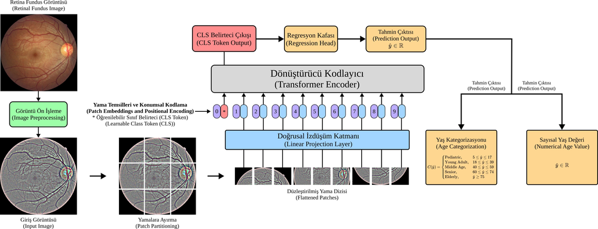

Decoding Chronological Age from the Retinal Fundus Images: A Deep Learning-based Analysis with Vision Transformers

Abstract
This paper presents a Vision Transformer (ViT) based analysis study for chronological age prediction using retinal fundus images. In the scope of the study, four distinct ViT models with different parameters were trained and tested by using retinal images pre-processed through various stages. Experimental tests were carried out on a recent data set in this field, including both regression-based age prediction and age category classification, and the observed results were reported. The observed experimental results demonstrate that the ViT based approach shows competitive performance in the task of chronological age prediction from retinal fundus images. In the performance evaluation tests, a mean absolute error (MAE) of 4.86 was measured for the chronological age prediction. In the age category classification using the predicted age values, an accuracy of 0.8497, a precision of 0.7287, a recall of 0.7196, and an F-measure of 0.7219 were observed, respectively.